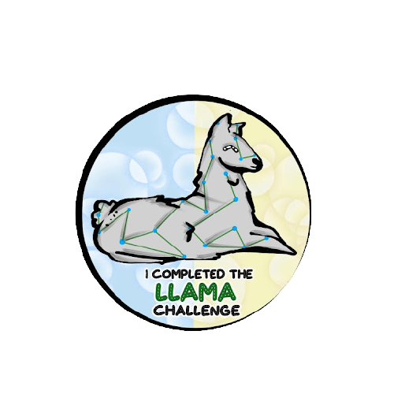

The LLAMA System Journey
Our story:
We, the Shenendehowa Robotic Renovators, created this site while participating in a school sponsored program called
FIRST Lego League (FLL), a Shenendehowa CSD middle school robotics club. In FLL, teams participate in a challenge every
year that includes researching a topic. For the 2020-21 challenge, called Game Changers - RePLAY, we were charged with
looking for ways to help people be more active. Becoming more active is really difficult to do during a pandemic. For
more information on this challenge go to https://www.firstinspires.org/robotics/fll/challenge-and-season-info for more
information. We looked for a solution that is safe,inexpensive, and, most importantly, FUN. We decided to focus on
helping to make parks, trails, and nature preserves more accessible to people within our community. We define our community
as the towns within our school district which includes Ballston Lake, Clifton Park, Halfmoon, Jonesville, Malta, Mechanicville,
Rexford, and Waterford (towns in upstate New York).
We call our website and solution the LLAMA System. LLAMA stands for Local Links that Augment and Motivate Activity.
Benefits of the LLAMA System include:
- A one stop resource so that people can find all of the parks, trails, and nature preserves within our community, with
helpful information about each location. One can search our website for a specific park, trail, or nature preserve.
- Identify connections between the parks, trails, and nature preserves so that people can go from one to another if they
want to explore or run/bike a greater distance that a particilar location/trail offers.
- This website will help end-users plan outings. For example, a cross country team can plan a long training run through existing
trails and preserves.
- A link to a separate webpage called TEA LLAMA (TEA stands for Trail Efficiency Algorithm) identifies the shortest distance
between connections. To do this a minimum spanning tree algorithm was used to calculate the shortest distance between
existing points.
- Our code is available on Github so others can customize it to their community and for feedback and to help with debugging.
- Fun fact, our solution name was inspired by a team member who thought a lego piece looked like a llama, though it was actually called the technic, pin connector perpendicular 3 x 3 bent with 4 pins. We also found the piece unique because it crosses three axes (x, y, z).

If you have any questions about the FLL program, or have questions or want to provide feedback about this site then please email
llamasystem@gmail.com.
Back